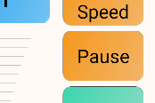
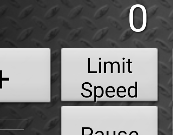

Detailed Instructions
Connecting
Connecting has two aspects:
Connecting to the WiFi network, which uses Android’s built in capabilities (not Engine Driver’s)
Connecting Engine Driver to the WiThrottle server
Connecting to the WiFi network
Use Android’s Network - Wifi settings to connect to the same network as your WiThrottle server
With some exceptions, your device’s IP Address should be similar to the server’s IP address (the first three blocks of numbers will be identical)
For your Android device / phone, you can see its address in the Engine Driver’s ‘About Screen’ (), at the top of the screen
For a JMRI server, see the WiThrottle screen for its address
For other devices, see the instructions for that device
Note
Also see the WiFi issues page if you are having difficulties.
Connecting Engine Driver to the WiThrottle server
Start Engine Driver
You will be presented with the Connection ScreenOn the Connection Screen there are three ways you can select a WiThrottle server to connect to:
IP Address and Port
Discovered Servers
Recent servers
Discover Servers
This is the most common way to connect. If the server you want to connect to is in the list, simply click on it and you will be taken to the Throttle screen.
If the server does not appear in the recent list try one of the other two methods. Your server not appearing in the recent list is not necessarily a problem See Connection issues for more information.
Recent Server List
If the server you want to connect to is in the list, simply click on it and you will be taken to the Throttle screen.
A server being in this list does not necessarily mean that you will be able to connect it now. It just means that you have successfully connected to it in the past.
There is also a ‘demo’ server at jmri.mstevetodd.com, port 44444 in this list that you can connect to for testing. (If your device/phone has an internet connection.)
IP Address and Port
Type in the IP address and Port of the WiThrottle server and press Connect.
To find your server’s IP address and Port:
For a JMRI server, see the WiThrottle screen for its address
For other devices, see the instructions for that device
If you only ever connect to one WiThrottle server you can effectively bypass this screen by setting the Auto-Connect to WiThrottle Server? preference.
Note
Also see Connection issues if you are having difficulties.
Disconnections
Engine Driver and/or the Android device can occasionally lose the connection even after it successfully connected. There can be a lot of causes. If ED does lose connection it will buzz, vibrate and take you to Reconnecting Screen. It will repeatedly and indefinitely attempt to reconnect.
If JMRI does not receive any feedback from your device/phone within a configured period, JMRI will stop all the locos you have selected on you device/phone.
Note
See WiFi Issues Page more information for possible causes/solution.
See Feedback on Disconnect preference on the Preferences page to disable the audible and haptic warnings.
Turn Track Power On
Some DCC Command Stations need to be instructed to turn the Track Power on before you can use them. This is not required by all Command Stations so check your manufacturer’s instructions.
There are two ways to turn the Track Power on/off:
Power Screen - accessed from the menu
Power Action Bar button - needs to be enable in the preferences
The Power Screen can be accessed from the . This will open the Power Screen where there is a simple button that to turn the power on or off. Use Android’s Back button to return to the Throttle Screen.
If the Power Action Bar button is enabled, simply click on it to turn track power on or off.
Note
See the Power section of the User Interface page for more information.
See the Power Button option in the Preferences page for more information on enabling the Power Button on the Action bar.
Selecting & Releasing Locos
Selecting and releasing locos and Consists/Multiple Units is initiated from the Throttle Screen, by clicking on the Select button of one of the Throttles on the screen.
(The Throttle screen may have from 1 to 6 throttles on it, depending on the Throttle Screen Layout preferences you have chosen.)
Selecting a Single loco
There three ways select a loco:
By entering a DCC Address
By selecting from the Roster
By selecting a Recent Loco
DCC Address
You can enter the loco’s DCC address (verify short or long), and press Acquire to select the loco. You will then be taken back to the Throttle screen with that loco selected.
Roster
If the loco you want to control is in the list, simply click on it and you will be taken back to the Throttle screen with that loco selected.
The Loco you want to control needs to be in the roster of the WiThrottle server. Not all WiThrottle server support rosters. Refer to the JMRI documentation or you WiThrottle server device’s documentation for creating a roster.
Also see Locomotive Icons below.
Recent Locos
Engine Driver remembers the last 10 locos that you have selected. (That number can be increased or decreased with Maximum Recent Locos preference.)
If the loco you want to control to is in the list, simply click on it and you will be taken back to the Throttle screen with that loco selected.
On the fly / In Phone Consists (Multiple Units)
There two ways create a Consist / Multiple Unit train:
Selecting additional locos, one loco ‘at a time’ (as above)
DCC Address
Roster
Recent Locos
By using the Recent Consists list
One at a time
Adding additional locos the Consist / Multiple Unit train is identical to the process of selecting a single loco. Simply click on the Select button, which will be showing the name or address of any locos already selected.
After selecting each additional loco, you the Consist Edit screen will be shown. This allows you to:
Change the facing of each loco (except the front loco)
Change the order of the locos in the Consist / Multiple Unit
Remove locos from the Consist / Multiple Unit
Recent Consists
Selecting a Consist / Multiple Unit in the Recent Consists list will automatically add all the remembered locos, including their facing.
Note:
There is no real limit to the number of locos that can be added to a Consist / Multiple Unit.
The order of the locos in the consist can be important. By default, lights and sound functions are only sent to the first loco. This can be overridden in the preferences.
Running Trains
Once you have selected a loco or consist / multiple unit for a throttle, the names or addresses of the locos will be shown in the Select button of the throttle.
From here you can:
Control the speed and direction of you loco or consist / multiple unit
Activate the DCC functions for you loco or consist / multiple unit
Activate the Virtual Sounds
Add or release locos.
Note
See Selecting / Releasing Locos and Consists/Multiple Units for more information.
Controlling Speed
There are eight ways you can control the speed of of your loco or consist /multiple unit train:
Sliders (if available in the Throttle layout)
Speed buttons (if enabled)
Stop button
Volume keys
Emergency Stop - Action Bar button (if enabled)
Pause button (if enabled)
Limit Speed button (if Enabled)
Gamepad keys (if connected)
Sliders
Dragging you finger along the slider will increase or decrease the speed of the loco(s) selected for the that Throttle. Pressing and holding your finger at one spot on the slider will cause Engine Driver to slowly increase or decrease the speed of the loco(s) selected for the that Throttle till it gets to that point.
Depending on the Throttle Screen Layout chosen all sliders on the Throttle Screen will be either:
one-directional (0% - 100%)
orbi-directional (-100% - 0 - +100%)
In most Throttle Screen layouts it is possible hide the Speed Sliders.
See the Speed Slider and Buttons section on the Preferences page for more information.
Speed buttons
The Throttles on the Throttle Screen may configured have
++and--Speed Buttons that allow you to increase or decrease the loco’s speed.Click on the
ForwardorReversebuttons to increase of decrease the speed in by a defined Amount.Click and Hold on the button continually increase the speed by a defined steps.
Note
See the Display Speed buttons? preference in the Speed Slider and Buttons section on the Preferences page for more information on enabling the Speed Buttons.
See the Throttle Screen Layout preference on the Preferences page for more information on the Throttle Screen Layouts that support Speed Buttons.
See the Speed button Change Amount preference in the Throttle Control Preferences section on the Preferences page for more information on changing how much the speed changes on each click.
Stop button
Click on the Stop button of a Throttle on the Throttle Screen to stop all the select Locos for that Throttle. If you have momentum configured for in the decoders in the locos, they will gradually come to a stop.
Volume Keys
The Volume Up and Volume Down hardware keys of your device / phone act exactly the same at as the Speed Buttons of the ‘current’ Throttle.
Click on the Volume Up and Volume Down buttons to increase of decrease the speed in by a defined Amount.
Click and Hold on the button continually increase the speed by a defined steps.
The Volume Keys can only affect one throttle at a time. Which throttle is being controlled by a small ‘V’ in the Throttle Speed amount area. To change to another Throttle, click on the Throttle Speed amount area of another Throttle.
Note
See the Volume Button Preferences section on the Preferences page for more information on disabling the Volume Keys and changing how much the speed changes on each click.
Emergency Stop - Action Bar button

If enabled, the Emergency Stop button on the Action Bar will attempt to stop all the locos on all the Throttles controlled by your device / phone as quickly as possible.
It does not stop locos controlled by other people / controllers.
Note
See the Emergency Stop button? Preference on the Preferences page for more information on enabling the Emergency Stop button.
Pause button
If enabled, the Pause button will gradually bring the Loco (or Consist / Multiple Units) on the Throttle to gradually step down to the zero speed. Clicking the button again will gradually return the Loco (or Consist / Multiple Units) on the Throttle back to the speed that it was before you fist pressed the button.
Note
See the ‘Limit Speed’ & ‘Pause’ button Preferences section on the Preferences page for more information on enabling the Pause button.
Limit Speed button
If enabled, the Limit Speed button will restrict the maximum speed on the Throttle to predefined amount. (Default is 50%) Clicking the button again will take off the restriction. (i.e. back to 100%)
This is commonly used for Switching/Shunting work VS mainline running.
Note
See the ‘Limit Speed’ & ‘Pause’ button Preferences section on the Preferences page for more information on enabling the Limit Speed button.
Gamepad keys

Any keys and/or the any DPad directions can be configured to change Speed, Stop, Emergency Stop, Pause or Limit Speed.
Note
See the Gamepads Operation page for information on selecting and using a gamepad.
See the Gamepads Configuration page for information on configuring the keys of the gamepad.
{kind=link}
{kind=link}
Controlling Direction
There are three ways you can control the direction of your loco or consist /multiple unit train:
Direction Buttons - for throttle screen layouts with direction buttons
Sliders - For throttle screen layouts without direction buttons (Switching/Shunting)
Gamepad keys
Direction Buttons

Throttles on Throttle Screen Layout that are not of the Switching/Shunting type have Forward and Reverse Direction Buttons for each throttle.
Clicking on a button will change the direction of the loco ( or Consist / Multiple Unit)m if it is not already moving in that direction.
The Direction Buttons can be: * Disabled while the loco (or Consist / Multiple Unit) is moving. (i.e. the speed in either direction is greater that zero.) * Re-labeled * Can be swapped
Direction Buttons are Not available on the Switching/Shunting Throttle Screen layouts.
Note
See the Throttle Screen Layout preference on the Preferences page for more information on the Throttle Screen Layouts that support Direction Buttons.
See the Swapping Direction Buttons or Renaming Direction Buttons On the Advanced Operation page for information on swaping or renaming the buttons.
See the Direction Button Preferences section of the Preferences page for additional options for configuring the Direction Buttons.
Sliders - Switching/Shunting Throttle Screen layouts

Depending on the Throttle Screen Layout chosen sliders on the Throttle Screen can be b-directional. (Switching / Shunting Layouts)
Switching / Shunting Layouts have ‘stationary’ (zero speed) at the centre of the slider. Dragging your finger along the slider to the right (or up) from the centre will increase the speed of the loco(s) selected for that Throttle in the forward direction. Dragging your finger along the slider to the left (or down) from the centre will increase the speed of the loco(s) selected for the that Throttle in the reverse direction.
Pressing and holding your finger at one spot on the slider will cause Engine Driver to slowly increase or decrease the speed of the loco(s) selected for the that Throttle till it gets to that point. If the point you are holding is on the opposite half of the slider the speed will slowly decrease speed to zero, then slowly increase speed in the opposite direction to the point you are holding.
Note
See the Throttle Screen Layout preference on the Preferences page for more information on the Throttle Screen Layouts that support the Switching / Shunting Layouts.
Gamepad keys
Any keys and/or the any DPad directions can be configured to change direction directly or indirectly (by changing speed when using a switching / shunting throttle Screen Layout).
Note
See the Gamepads Operation page for information on selecting and using a gamepad.
See the Gamepads Configuration page for information on configuring the keys of the gamepad.
DCC Functions
There are two ways you can activate the DCC Functions of the decoder in your loco or consist /multiple unit train:
Function buttons
Gamepads keys (if connected)
The DCC functions can be impacted depending on the settings and preferences you have selected:
Function Labels
Functions in consists
Activating the DCC Function via the Function Buttons
Most (all bar one) Throttle Layouts show a number of DCC Function Buttons below or beside the Sliders for the individual Throttles on the Screen. Clicking a button will send that function to the Loco (or lead loco of a Consist / Multiple Unit.) This behaviour can be altered in the preferences.
Note
See the Functions page for information on changing the Functions.
See the Consist Function Follow Preferences on the Preferences page for information on changing the behaviour of the functions in consists / multiple units.
Activating the DCC Function via the Gamepad Keys
Any keys and/or the any DPad directions can be configured to activate the DCC Functions.
Note
See the Gamepads Operation page for information on selecting and using a gamepad.
See the Gamepads Configuration page for information on configuring the keys of the gamepad.
Function Labels
Most (all bar one) Throttle Layouts show a number of DCC Function Buttons below or beside the Sliders for the individual Throttles on the Screen.
By default:
If you select a loco from a WiThrottle Roster Entry, it will show the labels on the buttons as they have been configured in the Roster Entry on the server.
If you enter the DCC address of the loco, it will show Engine Driver’s ‘Default Function Labels’.
All 29 functions will be shown. They are:
F0 / Light
F1 / Bell
F2 / Horn / Whistle
F3 - F28
Which function buttons, how many function buttons and what labels are displayed, can be changed via the from the Throttle Screen
If you select a Loco from the Recent Locos or Recent Consists lists that was originally selected from a roster, Engine Driver will attempt to show the Labels from the server roster entry.
Note
See the Functions page for information on changing the Functions and Function Labels.
Functions in consists
By default DCC Functions are only sent to the first loco in a Consist / Multiple Unit. This can be changed in the Preferences.
There are a number of preferences that can be used to override the default behaviour.
Note
See the Consist Follow Functions in the Preferences page and the Consist Follow Functions om the Advanced Operation page for more details.
Virtual Sounds - In Phone Loco Sounds (IPLS)
Engine Driver can play synchronised loco sounds through the speaker of your Android device / phone, or through BlueTooth speakers connected to it.
There is built in Support for a number of different type of locos:
Steam - 4 in-built profiles
Diesel - 3 in-built profiles
Plus you can create you own Custom profiles
To enable In Phone Loco Sounds (IPLS) for a throttle (only the first two throttles on an given throttle screen) select an option in Throttle 1 Loco Sounds or Throttle 2 Loco Sounds (or both) preferences. Once enabled for either throttle a new menu option will be available from Throttle Screen to make subsequent changes easier:
To make it easy to switch sound profiles we recommend enabling the Action Bar button by setting the In phone sounds button preferences:
Automatic Loco Speed Step Sounds
Each IPLS Profile has a different number of speed steps. As the loco speed increases or decreases to a certain point a different sound will repeatedly play. To try to emulate the momentum of the loco, there is a preset delay, and an option to not lip the sounds (which enforces a minimum delay) These can be altered with the In Phone Momentum and the Don’t clip loco step sounds preferences.
The volume of the Loco Sounds, the Bell Sounds and the Horn/Whistle sound can be altered independently with the In Phone Loco Sounds Volume, the In Phone Bell Sounds Volume and the In Phone Horn/Whistle Sounds Volume preferences.
Playing sounds
Other than the speed steps sounds, which are automatic, there are three ways to play the additional sounds:
IPLS specific buttons
Via the DCC F0, F1, F2 DCC Functions (if set in the preferences)
Gamepad keys (if connected)
See In Phone Loco Sounds (IPLS) for more information.
Activating the IPLS Sounds via IPLS Buttons
Once an IPLS profile is selected for a throttle (either of the first two throttles), four new buttons will be shown near the DCC Function Buttons, with a ‘headphones’ symbol to distinguish them from the normal DCC Functions.
Mute (IPLS)
Bell (IPLS)
Horn/Whistle (IPLS)
Short Horn/Whistle (IPLS)
Mute button
Clicking this will disable all IPLS sounds for this Throttle.
Bell button
Clicking this will continuously play a bell sound until it is clicked again (latched)
The Bell can be made non-latching by changing the Bell button Latching/Momentary preference.
Horn / Whistle button
Clicking this will continuously play a horn or whistle sound (depending on the profile) until the button is released (non-latched)
Short Horn / Whistle button
Clicking this will play a horn or whistle sound (depending on the profile) ones, regardless of how long the button is held down.
Activating the IPLS Sounds via DCC Functions / Function Buttons
The Bell and Horn/Whistle (long) can be activated by the DCC Function buttons (F1 and F2) if the F1 and F2 activate Bell and Horn? preference is set.
Activating the IPLS Sounds via Gamepad keys
Any keys and/or the any DPad directions can be configured to activate play the IPLS sounds.
Note
See the Gamepads Operation page for information on selecting and using a gamepad.
See the Gamepads Configuration page for information on configuring the keys of the gamepad.
Action Bar and Menu
Action Bar

The Action Bar provides for a number of common and specific information and functions. It can display:
The app name (Engine Driver)
Optionally configured information:
Fast Clock
Children’s Timer Status and Countdown
Full Screen or Action Bar Only left/right swipe
WiThrottle Server Name
Optionally configured buttons:
Emergency Stop (EStop)
Track Power
Flashlight
Throttle Web View
Throttle Layout Switching
In Phone Loco Sound
Children’s Timer
Track Power Action Bar Button
TODOAccessed from the from most screens.
Menu item
Action Bar button
In Phone Loco Sounds (IPLS) Button
TODOPreferences
Action Bar Button
Note
See the Action Bar on the User Interface page for information on the Action bar buttons.
See IPLS page
Turnouts / Points
Engine Driver can control DCC controlled Turnouts / Points on your layout if configured in you WiThrottle server.
To get the Turnouts / Points screen you can use the menu from the main screens. You can also swipe right from the Throttle Screen (if enabled in the preference).
The WiThrottle Server must have Turnouts / Points enabled.
If you’ve defined your turnouts and routes in a panel file, make sure to specify “user names” for those you’d like to see listed on your throttle. You can also “filter” the turnouts shown using the WiThrottle->Filter Controls option in the WiThrottle window.
Turnouts/Points can be operated three ways
By entering their DCC Address
From the JMRI Defined Turnout/Point list provided by the WiThrottle Server (JMRI)
From the recent Turnout/Point list
DCC Address
Enter the DCC address of the Turnout / Points you wish to control.
Three buttons will be available
Throw
Close
Toggle
TODOJMRI Defined Turnout/Point list
Server must
Filtering
Must be named???
TODOsee delimiter preference
Recent Turnout/Point list
TODO
Note
See the Left/Right Swipe preferences on the Preferences page for information on enabling or disabling the swipe though Turnouts/Points.
Routes
Engine Driver can control Routes on your layout if configured in you WiThrottle server.
When using DC++EX as your WiThrottle server, Routes can be used to activate Automations.
To get the Turnouts / Points screen you can use the menu from the main screens. You can also swipe left from the Throttle Screen (if enabled in the preference).
If you’ve defined your turnouts and routes in a panel file, make sure to specify “user names” for those you’d like to see listed on your throttle. You can also “filter” the turnouts shown using the WiThrottle->Filter Controls option in the WiThrottle window.
From the WiThrottle server
Note
See the Left/Right Swipe preferences on the Preferences page for information on enabling or disabling the swipe though Routes.
See the Automation (EX-RAIL) page on the DCC++EX website for more information on using Automations in DCC++EX.
Panels and Web Pages
Throttle Web View VS Web Screen
Engine Driver has two distinct ways you view web pages.
Throttle Web View
Web Screen
This section describes the Web Screen, which is a full screen web browser. The Throttle Web View is a half Screen web browser that optionally shares the screen with the Throttle Screen. See the Throttle Web View section on the User Interface page from more information Throttle Web View.
The Web Screen can be accessed three ways:
Menu
Swipe
Auto Web Orientation
Menu
TODOTo get the Web screen you can use the menu from the main screens. You can also swipe left from the Throttle Screen (if enabled in the preference).
Swipe
TODOIf enabled
Not allowed if Auto Web orientation is enabled. (Preference is automatically disabled)
Auto Web Orientation
If enabled
Swipe preference is automatically disabled on selection
TODONote
See the Left/Right Swipe preferences on the Preferences page for information on enabling or disabling the swipe though Web.
Pushing the app to the Background
By using the Android Home ( ○ ) or Recent Tasks ( □ ) navigation buttons, or if you press the Power physical button, it is possible to push the Engine Driver app into the background. Engine Driver will give a sound, warning and will add an entry to the Notification Shade when this happens.
Clicking on the Notification Shade entry or the app icon will return you the same screen your were in when to pushed the app to the background.
Engine Driver is not designed to run in background and its performance is not predictable.
While Engine Driver will attempt to continue to run in background, it is at the mercy of the Android OS. Android itself is designed to kill dormant apps, which it will considers this to be, if it thinks there is a better use of the memory or processor, so it can be terminated at any time without warning.
In general avoid letting Engine Driver try to run in background.
Note
If you are concerned about preserving the battery, there are options. See ??? for more information.
See the Background Alert in the Preference page for information on disabling the alert.
Exiting Engine Driver
To exit Engine Driver, you can:
Press the Android Back button once from the main screens (more than once if you are on one of the secondary screens)
OR
Exiting Engine Driver:
Disconnects from the WiThrottle server.
Stops playing all In Phone Loco Sounds (if any were configured).